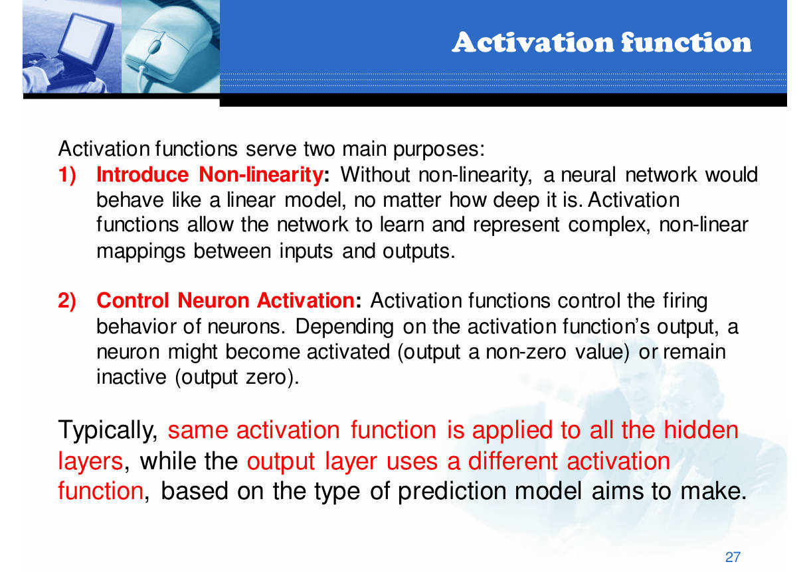
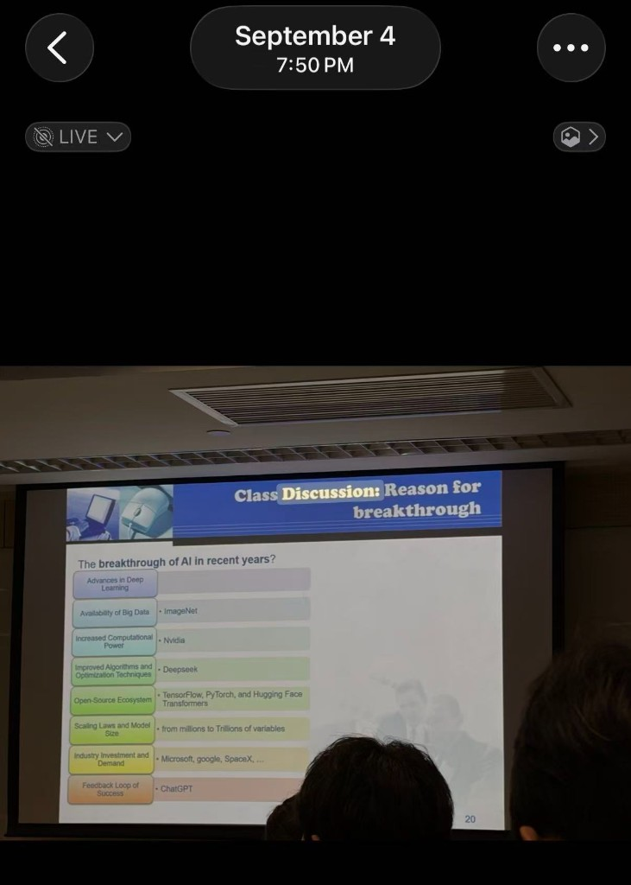
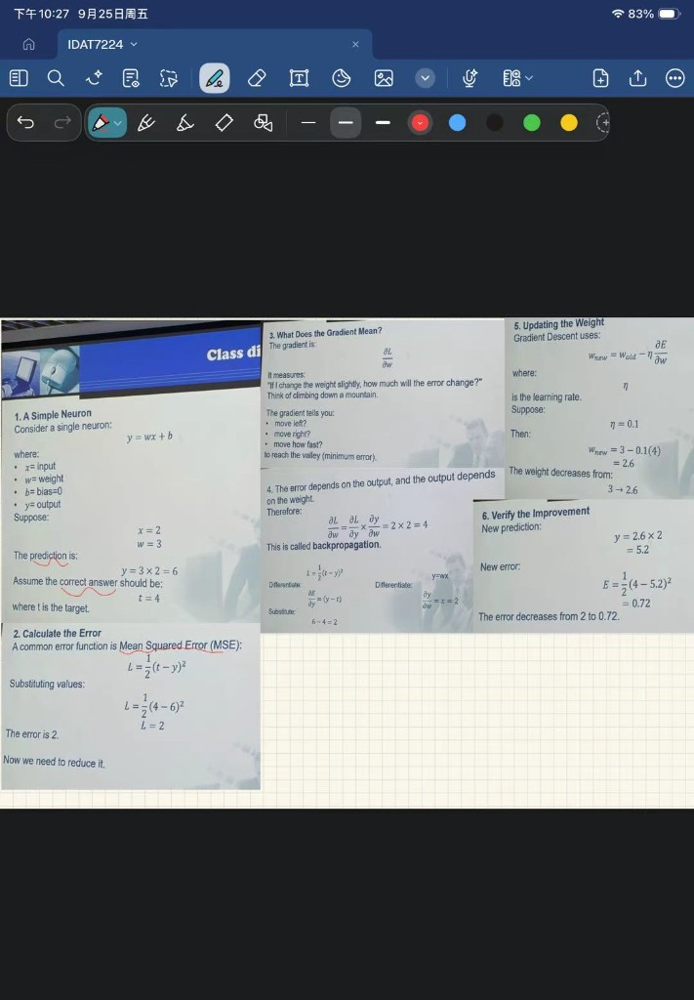
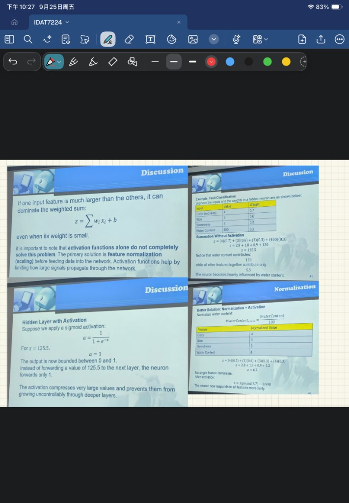
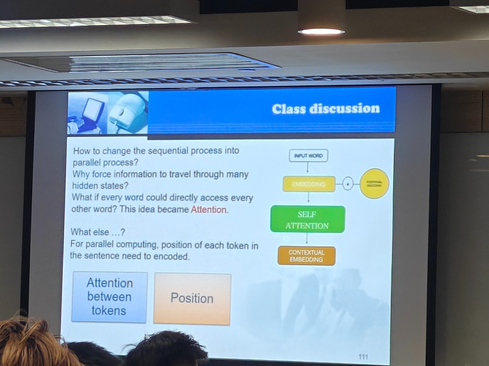

神经网络怎样学习
📥Input输入 x
→⚖️Weighted sumz=wx+b
→⚡Activationa=f(z)
→🎯Loss误差
Case: x=2,w=3 gives y=6, but t=4. Updating w to 2.6 reduces loss from 2 to 0.72.
Beginner-friendly bilingual visual outline. 从学习直觉进入完整讲义和英文题库。
Case: x=2,w=3 gives y=6, but t=4. Updating w to 2.6 reduces loss from 2 to 0.72.

没有激活函数，多层仍是一条线性变换。Activation lets a network learn nonlinear patterns.
History, classifications, learning types, agents, data platforms, databases, cloud/edge, training/inference, engineering applications.

Neuron analogy, six components, forward/backprop, activations, ANN types, linear regression.

Apple classifier, Softmax, scaling, hidden layer, cross-entropy update, RBF.

N-gram, RNN/BPTT, gradients, LSTM, GRU, Q/K/V, attention and Transformer.

完整四章资料：全部章节、公式、案例、课堂照片和版本差异说明。
每天覆盖完整范围，并直接跳到对应英文题目。
Morning: neuron parts, forward/backprop, activations.
Afternoon: Q8-Q17 and both loss conventions.
Evening: Q18-Q28: Softmax, scaling, cross-entropy, RBF.
Morning: sequences and n-grams.
Afternoon: RNN, BPTT, vanishing/exploding gradients.
Evening: LSTM, GRU, attention and Transformer.
Morning: Q1-Q7 and Q40-Q46.
Afternoon: D1-D8 and assignments.
Evening: timed simulation and error review.
46 chapter questions + 8 Discussion questions + 6 assignment and transfer questions.
课堂重点和作业主题全部转成英文考试题。
Grade table, parameter count, neuron update, feature scaling, databases, agents, sequences, and attention.
Robotic arms, safer services, machine feelings, ReLU, AI employment, and argument structure.
把知识转成分数，把陌生题转成熟悉步骤。
| Four-point regression | L=(ŷ-y)²; factor 2 |
| Week 2 neuron | L=½(t-y)² |
| Softmax + CE | probability-target |
| RBF | exp(-d²/(2σ²)) |